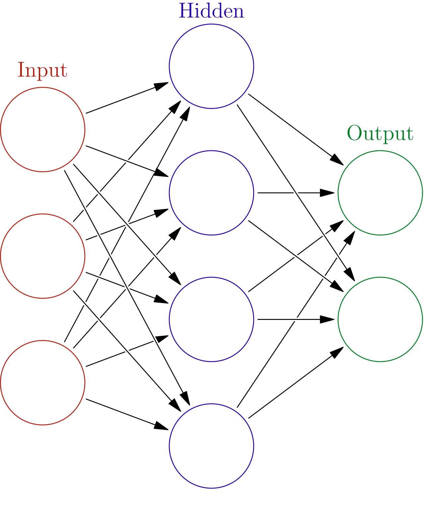

# Foundations of Neural Networks #### Oscar Llorente Gonzalez (ollorente@comillas.edu) --- ## Index - Introduction - Linear Layer - Non-linearities - Loss Functions - Optimization - Initialization --- <section> <div class="mermaid"> flowchart LR A[Black] --> B[Ruff Isort]; B --> C[Flake8]; C --> D[Pylint]; D --> E[Complexipy]; E --> F[Mypy]; </div> </section> --- ## Real vs Artificial Neuron <div class="multicolumn"> <div>  </div> <div>  </div> </div> --- ## Artificial Neuron --- --- ## Perceptron  --- ## What is a Linear Layer? <div class="multicolumn"> <div> </div> <div> <p></p> </div> </div> --- ## Linear Layer (Code Example) <div class="multicolumn"> <div> ```python import torch inputs: torch.Tensor = torch.rand((64, 40)) layer = torch.nn.Linear(40, 10) outputs = layer(inputs) outputs.shape >>> torch.Size([64, 10]) ``` </div> <div> <!--  --> </div> </div> --- ## Linear Layer (Documentation)  --- # Side by Side <div class="multicolumn"> <div> ```python import torch class MyModel(torch.nn.Module): def __init__(self,): """ This """ super().__init__() return None ``` </div> <div> ```python import torch ``` </div> </div> --- ## What does it do? <a href="https://www.markdownguide.org/" target="_blank"> <img src="./img/markdown-logo.svg" style="height: 100px; background-color: white; margin-right: 50px;" /> </a> <a href="https://revealjs.com/" target="_blank"> <img src="./img/reveal-js-logo.svg" style="height: 100px;" /> </a> - Build static HTML slideshow files from Markdown files. - Turn a single Markdown file into a HTML slideshow. - Turn a directory with Markdown files into a collection of HTML slideshows. - Publish your slideshow(s) anywhere that static files can be served. - Locally, on a webserver, deploy through CI/CD with GitHub/GitLab (like this repo!), ... --- - Preview your site as you work, thanks to [python-livereload](https://pypi.org/project/livereload/). - Use existing [Reveal.js themes](https://revealjs.com/themes/) and [Highlight.js themes](https://highlightjs.org/examples), or define custom CSS themes, favicons, templates, ... for more control if desired. - Support for emojis 😄 🎉 🚀 ✨ thanks to [emoji](https://pypi.org/project/emoji/) - Depends heavily on integration/unit tests to prevent regressions. - And more! --- ## Usage - Input - **directory** with multiple (nested) Markdown files - Output - Directory with static HTML slides - Includes an index.html page with links to each slideshow when the input was a directory - Can be used for - Local slides - Hosted slides on webserver - Slides generated automatically by CI/CD using Markdown files in GitHub/GitLab repo - That's exactly what is happening [here](https://github.com/MartenBE/mkslides/blob/main/.github/workflows/test-deploy.yml)! --- ## Customizable - Configuration in `mkslides.yml` - You can customize: - Index page: - Theme (local file or by public URL) - Favicon (local file or by public URL) - Title - Template for the output HTML page - Slides - Theme ([Reveal.js theme](https://revealjs.com/themes/), local file, or by public URL) - Highlight.js Theme ([highlight.js theme](https://highlightjs.org/examples/), local file, or by public URL) - Favicon (local file or by public URL) - Title - Template for the output HTML page --- ## Example <iframe width="1280" height="720" src="https://www.youtube.com/embed/RdyRe3JZC7Q?si=GQoCFem5ZKHoIaVA" title="YouTube video player" frameborder="0" allow="accelerometer; autoplay; clipboard-write; encrypted-media; gyroscope; picture-in-picture; web-share" referrerpolicy="strict-origin-when-cross-origin" allowfullscreen></iframe> --- ## Installation ```bash pip install mkslides ``` --- ## Commands - Generate the static HTML files: ```bash mkslides build [OPTIONS] [PATH] ``` - Or open a live preview while editing the markdown files: ```bash mkslides serve [OPTIONS] [PATH] ``` - In case you need help or want to know more: ```bash mkslides build -h mkslides serve -h ``` --- ## Full help for build <!-- output-build --> ```text Usage: mkslides build [OPTIONS] [PATH] Build the MkSlides documentation. PATH is the path to the directory containing Markdown files. This argument is optional and will default to 'slides', or 'docs' if the first directory doesn't exist. If PATH is a single Markdown file or a directory containing a single Markdown file, it will always be processed into `index.html` regardless the name of the Markdown file. Options: -f, --config-file FILENAME Provide a specific MkSlides-Reveal config file. -d, --site-dir PATH The directory to output the result of the slides build. All files are removed from the site dir before building. [default: site] -s, --strict Fail if a relative link cannot be resolved, otherwise just print a warning. -h, --help Show this message and exit. ``` <!-- /output-build --> --- ## Full help for serve <!-- output-serve --> ```text Usage: mkslides serve [OPTIONS] [PATH] Run the builtin development server. PATH is the path to the directory containing Markdown files. This argument is optional and will default to 'slides', or 'docs' if the first directory doesn't exist. If PATH is a single Markdown file or a directory containing a single Markdown file, it will always be processed into `index.html` regardless the name of the Markdown file. Options: -f, --config-file FILENAME Provide a specific MkSlides-Reveal config file. -s, --strict Fail if a relative link cannot be resolved, otherwise just print a warning. -a, --dev-addr <IP:PORT> IP address and port to serve slides locally. [default: localhost:8000] -o, --open Open the website in a Web browser after the initial build finishes. --debounce-interval FLOAT Interval in seconds to debounce file changes. After an initial file change, the browser will only be reloaded after this interval has passed without any new file changes. This helps to prevent multiple reloads when multiple file changes happen in quick succession. [default: 1.0] -h, --help Show this message and exit. ``` <!-- /output-serve --> --- ## Contributions - MkSlides is and always will be open source - [MIT license](https://github.com/MartenBE/mkslides/blob/main/LICENSE) - Contributions are very welcome! - Open an issue and/or PR - We only ask that you try real hard to include **tests**! - Almost everything is [tested automatically](https://github.com/MartenBE/mkslides/tree/main/tests/) --- ## Examples - The [MkSlides repo](https://github.com/MartenBE/mkslides/) itself generates the slideshow you are currently watching. - https://github.com/HoGentTIN/hogent-markdown-slides/: an example repo demonstrating all possibilities using Reveal.js with the custom [HOGENT](https://hogent.be/) theme, including ... - an example of the automatically generated index page - a [slideshow](https://hogenttin.github.io/hogent-markdown-slides/) with a lot of advanced examples such as [Mermaid.js](https://mermaid.js.org/) and [PlantUML](https://plantuml.com/) support, multicolumn slides, ... - an example of GitHub CI/CD pipelines ---